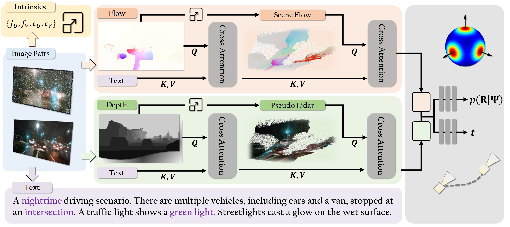

Autonomous Driving
End-to-end trajectory planning, navigation-conditioned behavior, and real-time embedded deployment.
Research Scientist - San Jose, CA
Research Scientist working on autonomous driving, multimodal planning, visual odometry, and embodied AI.
I build learning systems for trajectory planning and perception: Flow Matching and diffusion-style planners, multimodal prediction, visual odometry, robotics, and photorealistic 3D simulation.
About
I am a Research Scientist, Deep Learning Algorithm at Black Sesame Technologies, where I research and engineer end-to-end multimodal trajectory planning models for autonomous driving.
Previously, I worked with the H2X Lab at Boston University on ZeroVO, multimodal driving decision models, 3D reconstruction-based simulation, and guide-dog navigation datasets. Before BU, I worked with PKU-Agibot Lab on camera-to-robot pose estimation and robot manipulation. I hold an M.S. in Artificial Intelligence from Boston University and a B.S. in Data Science and Big Data Technology from Peking University.
End-to-end trajectory planning, navigation-conditioned behavior, and real-time embedded deployment.
Flow Matching, diffusion models, trajectory tokenization, anchor scoring, and multimodal futures.
Calibration-light geometry, VLM features, cross-attention, and synthetic driving data.
Pose estimation, ROS systems, NeRF, Gaussian Splatting, VR studies, and embodied AI datasets.
Publications
* indicates equal contribution.
Selected projects

Hover to playCVPR 2025
Visual odometry with minimal assumptions, fusing VLM features and geometric information through multi-head cross-attention.
Experience
Black Sesame Technologies - San Jose, CA
H2X Lab, Boston University
PKU-Agibot Lab, Peking University
M.S. in Artificial Intelligence, Sep 2023 - Jan 2025
B.S. in Data Science and Big Data Technology, Sep 2019 - Jul 2023
Leadership
Mar 2020 - Jul 2023
Yuanpei College Woodwork Class, Peking University
Feb 2023 - Jul 2023
Yuanpei College 3D Printing and Designing Lab
Skills
Python, C++, C, MATLAB
PyTorch, TensorFlow, Scikit-learn, JAX, Keras, HuggingFace
MLflow, Weights & Biases, Docker, Kubernetes, ONNX, TensorRT, Ray
OpenCV, Detectron2, YOLO, SAM, NeRF, 3D Reconstruction, Gaussian Splatting
ROS, ROS2, Blender, PyBullet, Libfranka, Franka-Control, CAD, Fusion 360
NumPy, Pandas, Matplotlib, SciPy, Dask, Spark, Luigi
Contact
I am based in San Jose, CA. The fastest way to reach me is email.